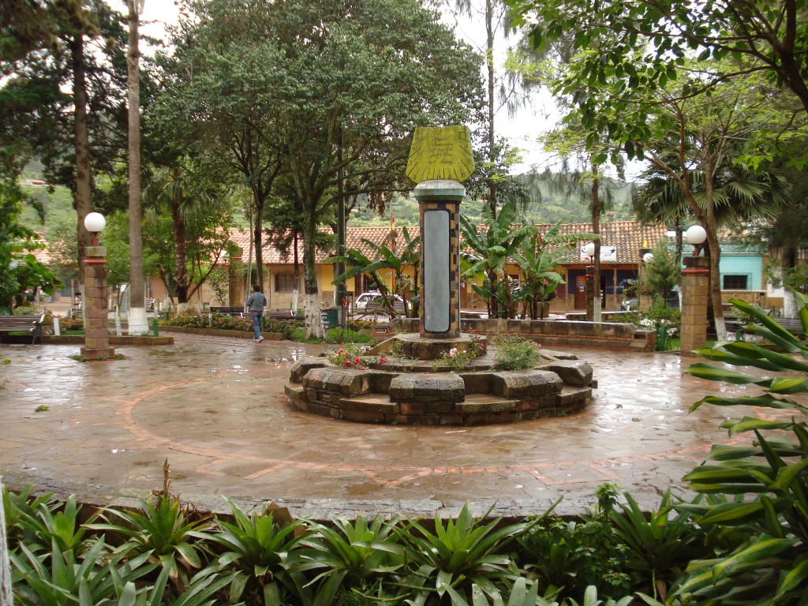

Samaipata es una ciudad ubicada en el departamento de Santa Cruz. Se encuentra rodeada de naturaleza y tiene un clima agradable.

Es un sitio arqueológico muy imponente y de gran importancia histórica.

Es el corazón de la ciudad, donde se encuentra la iglesia y otros edificios históricos.

Es un lugar natural donde se encuentran especies de helechos muy grandes y raros.